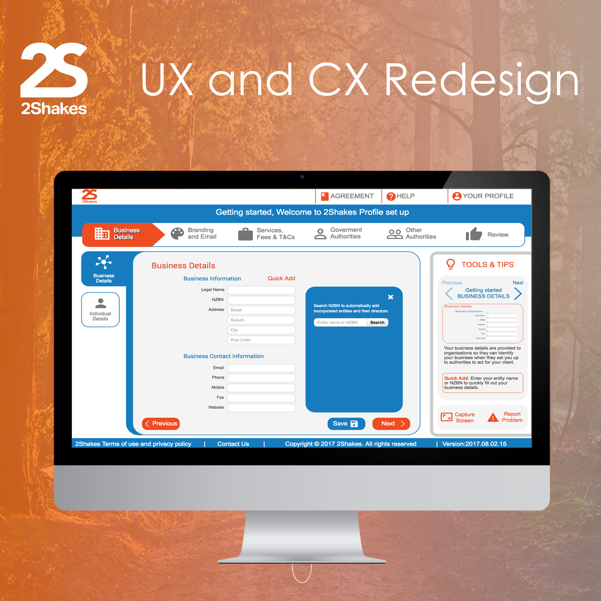
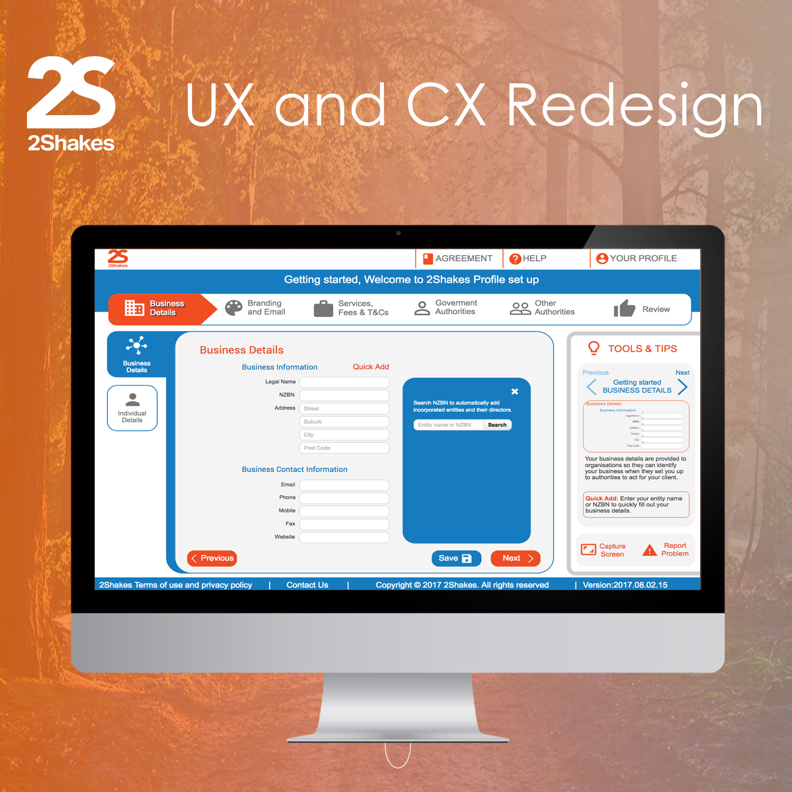
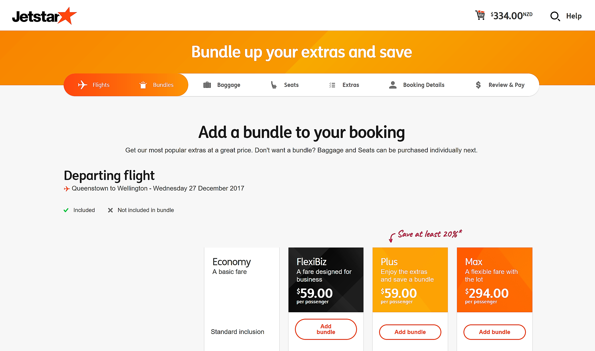
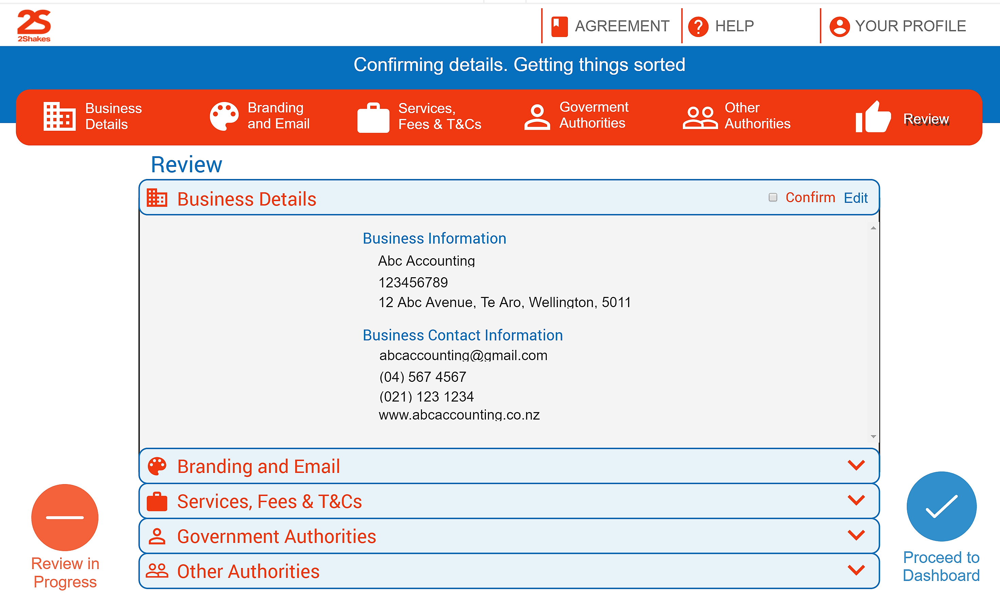

This project aimed to improve the profile setup step of 2Shakes web application. The 2Shakes software is centralised around the idea of automating the currently paper-based processes that many bookkeepers and accountants undergo. By improving the profile set up phase of the system accomplishes an efficient, user-friendly profile setup process as well as a visually appealing UX allowing for an intuitive process. By achieving these goals, 2Shakes will be able to overcome the barriers, such as converting customers on trial to paying customers.
Furthermore, it will reduce the number of clients and potential clients asking for support services when setting up a profile. It will also mean clients are more inclined to convert into paying customers as they find the setting up process to be clean and easy. We will be achieving these goals on behalf of 2Shakes (Mike Kelly and Ata McGregor).
Watch the video above to get an overall understanding of the existing signup process for 2Shakes.
Known as Team Oscar, we were a team of 4 passionate Information Systems students working on the 2Shakes improving the profile signup process.
Caradine Sangalang (Design Leader)
Priya Modi (Project Manager and Requirements Leader)
Smeet Patel [myself] (Construction Leader)
Vrutika Patel (Client Liaison)
The Project sponsors of the CX redesign project was Mike Kelly, the CEO of 2Shakes and Ata McGregor, the CXO, who we met on a weekly basis (Tuesday 3:30 pm). We worked with the sponsors to redesign the UI/UX interface to make registration and setting up of profiles easier for users.
Research of sign up forms other
Review of 2Shakes existing signup process
As a group, we chose to design our own wireframes because this allowed us to represent more concepts to 2Shakes at the meeting and we each had slightly different taste to design, so it was great we see everyones perspective and implementation.

Above is an overview of the wireframe design by each member of the team starting off with Caradine's wireframe top left, followed by Vrutika's and Caradine's bottom left and mine (Smeet)
My initial wireframes (high fidelity) is presented in the slides above bring innovative and creative features to make the user experience better for the 2Shakes sign-up process. (Caption is in the purple text in the sides)
Above the other member's wireframe designs, starting with Priya's wireframe followed Vrutika and Caradine's
In our meeting with 2Shakes, we had each received some feedback. We were told that overall all of the wireframe had some good aspects/features in our individual designs that we could implement and combine into a single group wireframe.
For our next meet with the project sponsor (Week 6, we got feedback on the latest wireframe which was based on Priya's initial wireframe. During the meeting, we annotated the wireframe design as shown in the slides above. Based on Priya's wireframes we improved and refined the wireframes depending on each member comments from the initial individual wireframe.
For the navigation, the team along with Ata choose to implement my vertical progress navigation.
With six weeks left, all had hectic schedules with our studies and part-time jobs. To get a move on, I decided that as a team we had to get a move along as a construction leader. I also want to redesign the wireframe with a different concept which is both user-friendly and aesthetically pleasing.
The current UI trends were using tiles, gradient colours, a lot of white space that emphasised minimalistic design.
Some of the key features which we planned to focus on where the navigation flow, implementation of tools and tips widget which allows users to access additional information, breaking down the form into understandable bit size features.
Concept 1 (chevron progress navigation with the banner on the top):

For this concept, I choose to implement the downwards chevron on the left, and tools and tips on the right. The primary forms would in the middle taking 75% of the width. Based on current UI trends, I used rounded corners and symmetry.
Concept 2 (step progress navigation on the top and tiles on the left side):

For this concept, I to implement a step progress bar in sideways chevron which has icons. We would break down each step into subsection and use tiles on the left.
Concept 3 (Dropdown navigation):

Design 3 above was inspired from Google Drive's side navigation that has minimalistic drop-down navigation with icons that globally recognised for better recognition and recall.
After I had finished designing the quick concept, we as a team met up, to discuss the design and decided to create another concept based on the side chevron design Ata the project sponsor liked.

The new design included tiles, which also incorporated chevrons. We decided further to have tabs for the top navigation in our team meeting.

The image above denotes sketches we made (in the meeting) of some tile design ideas.

We played around with seeing how the tiles would look at the bottom due to the fact as this is a rising trend in web apps, especially on devices such as tablets and mobile phones. Our project sponsors at this stage were still debating whether they think having a review page is beneficial to their users.

Instead of using tiles for the secondary navigation we decided to also experiment with tabs on the top.

The design above shows that when the user hovers over the tiles, the menu expands and also on the right-hand side the tools and tips can be minimised.
During the university break, we emailed Mike the project sponsor to have a look at our concepts, and he collated all the designs and presented his own version of the UI patterns or wireframes.

Again back to the drawing board, I wanted to present something which was contemporary with a new fresh look. We decided to implement a step-progress bar on the top with tiles on the left side of the screen.
Is JetStar the answer?
The second design was inspired based on the Jetstar web flight booking system.
Mike, the project sponsor, preferred the second option but said he would like to have a footer as well as a visual cue which allows the user to know which form is currently active because the user has the option to go back and revisit forms.
The Login page has been redesigned with rounded corners and with a more contemporary look.
We developed various UI concepts for the profile sign-up form. The review phases allow the user to verify the information which has inputted and allows the user to edit their details if necessary.
When meeting 2Shakes, they were accepting and happy with the layout and styling changes. We incorporated into our design so that when Skip was pressed, a pop-up notification would appear on the page giving users an option to skip the other stages of the profile set up and get straight to signing up clients or they could resume filling in their profile information.

Original training environment included a salmon coloured background. Instead, we went with a teal colour as it is different enough from the blue but does not take away from the 2Shakes orange. This colour was recommended by Mike, and it worked out reasonably well.
Demo Video of the 2Shakes Profile set up the prototype for the CX redesign.
The success of our project was dependant on being able to meet requirements from the project brief. This included the fact that the new UI had to allow stakeholders an easy and efficient transition through the sign-up process. Following from this the UI that we produced needed to be different from their original design, in terms of being refreshing and engaging to 2shakes clients. Ultimately the success of our overall project was determined by our sponsors who would thus be the ones determining the final approval of our project.
We were able to measure our project in terms of being an “easy and efficient” process through usability testing we conducted after completion of our UI design. We sent the usability test to a variety of people in terms of age, profession, gender etc. It was important that we got feedback from a mix of people as it meant our design could be critiqued from different perspectives. The feedback we got was remarkably positive in the sense that our project was able to be perceived as quite easy to use, visually appealing and overall an effective sign-up process. This was supported by facts such as users being able to locate the information we asked for, they found the colours complemented the 2shakes brand and worked well and lastly there were many aspects in the design that supported the user throughout the process (e.g. Tools & Tips, Sub and Main Navigation bar etc).
Moreover, we needed to take into account that the 2shakes clients we interviewed and received feedback from, didn’t actually locate any significant faults with the current process. Thus this meant that our deliverables were more so structured towards satisfying our sponsors. Each week we were able to take into account sponsor feedback, develop it and then get it critiqued. This is where the agile methodology came into play and meant that we had to act in accordance with their changing needs and requirements. Hence getting rapid feedback was crucial in order to build our design. Our sponsors were impressed at our ability as a team to progress our design in terms of what they wanted continuously. Towards the later weeks we were getting closer and closer to what our sponsors had in mind, regarding the project outcome and evidently, we were able to deliver and satisfy our sponsors.
The team being in sync was an essential factor that we tried to sustain during the duration of the project. Being successful was an important agenda which we made clear in the beginning, so thankfully that was a good starting point for our team to connect. We were successful in many aspects working together as we all valued what one another had to offer and although there were problems concerning scheduling or coming to a decision, we were able to persevere and overcome this through mutual consensus.
Our sponsors were happy with the way we worked together and stated that they were both able to spot something each of us contributed or offered to the final project. As a team, this was important to hear, and we were pleased with how our customers responded, as sponsor approval was a critical factor that aided us, in determining then, if our project was a success.
Overall our team was satisfied with the way things turned out within the limited time we had, and we are pleased to have met client satisfaction as this was an enabling factor in acknowledging the status of our project to be regarded as successful.
Final presentation